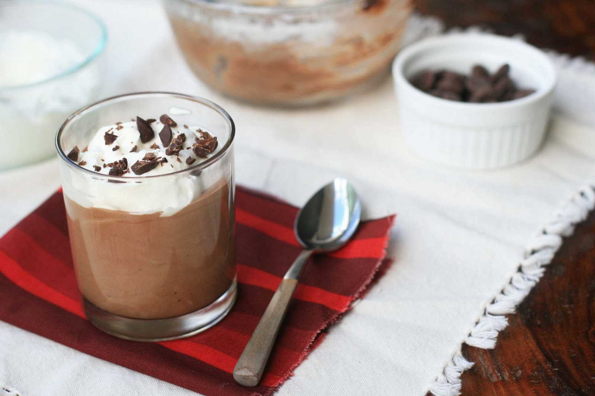

Classic Chocolate Mousse

Ingredients
- 1/2 cups bittersweet chocolate chips (I use Ghiradelli 60% cacao bittersweet chips)
- 2 Tablespoons coffee (can substitute water)
- 2 egg yolks, slightly beaten
- 1 Tablespoon coffee liqueur or vanilla extract
- 1 cup heavy or whipping cream
- 2 Tablespoons sugar
- whipped cream for garnish
- chocolate shavings or chopped chocolate for garnish
Method
- In a small heavy saucepan, melt chocolate chips with coffee over low heat; stir until
smooth.Temper the egg yolks by stirring a small amount of hot chocolate mixture into the egg
yolks.
Pour the egg
yolk mixture into the saucepan, stirring constantly. Continue to cook until slightly thickened.
Remove from the heat;
stir in the coffee liqueur or vanilla. Cool, stirring several times to speed up the process.
-
In a large bowl, beat whipping cream until it begins to thicken. Add sugar; beat until soft
peaks form.
Add 1/3 of the whipped cream into the cooled chocolate mixture and stir to combine.
Gently but
thoroughly fold in the remaining whipped cream. Spoon into individual serving glasses or dishes
and cover and
refrigerate for at least 2 hours. Garnish with whipped cream and chocolate shavings
or chopped
chocolate if
desired.
Return to main Page